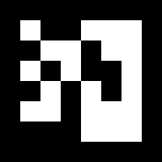
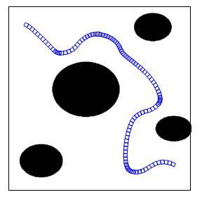

Navigating Autonomous Vehicles Through Complex and Changing Environments
— 09 September, 2017
AN: this post was adapted from the final report I wrote at the conclusion of the month-long MIT BeaverWorks summer program. This program centered on autonomous systems, and the course I selected involved programming modified remote controlled cars to navigate a complex racetrack. Our team finished in first place in both the individual time trial portion of the final event and the full 12 car Grand Prix.
Table of Contents
- Abstract
- I. Introduction
- II. Problem Statement
- III. Approach and Process
- IV. Results
- V. Personal Observations
Abstract
This project attempted to come up with an efficient method of programming autonomous remote-control rally cars to move and advance through a changing obstacle course. Challenges in this obstacle course included tight turns in a track bounded by cardboard walls, crossing over and under a bridge, and following a brightly colored portion of the track with no walls. Success was evaluated through individual time taken to complete the course and in a large 12-car race. Penalties were given for crashing into walls, veering off the defined track, or hitting other cars in the multi-car race. Although the project used one tenth scale cars, many of the concepts applied and safety features implemented throughout this project are equally applicable to modern self-driving vehicle technology.
I. Introduction
The Beaver Works Summer Institute (BWSI) is a subdivision of the Beaver Works program jointly chartered by the MIT School of Engineering and MIT Lincoln Laboratory. The Beaver Works program focuses on making innovative project-based learning available to students, and students at Beaver Works often make valuable contributions to a variety of pressing real-world global problems.
BWSI brings the same project-based learning techniques to high schoolers through a four-week STEM summer program. It celebrated its inaugural year in 2016, and has since had one additional session running from July-August in 2017. It offers high school students a unique opportunity to work with cutting edge technology that would otherwise be closed off to them, develops teamwork and communication skills, and promotes critical thinking and problem-solving.
During its first year, BWSI offered a single program: Autonomous RACECAR Grand Prix. This program focused on developing software to autonomously navigate MIT’s RACECAR platform through a complex course with a variety of different challenges, including tight turns, obstacles, and other cars. Students employed a variety of techniques to accomplish this, including wall following, artificial potential fields, and visual servoing.
 Fig. 1. Key components of the Rapid Autonomous Complex-Environment Competing Ackermann-steering Robot (RACECAR) platform, described in more detail in Section II.
Fig. 1. Key components of the Rapid Autonomous Complex-Environment Competing Ackermann-steering Robot (RACECAR) platform, described in more detail in Section II.
In its second year, BWSI expanded its course selection to include two new programs: Autonomous Air Vehicle Racing, in which students programmed quadcopters to navigate obstacle courses, and Autonomous Cognitive Assistant, in which students learned about machine learning and natural language processing technologies to build artificially intelligent cognitive assistants. This paper will focus on the Autonomous RACECAR Grand Prix program for the 2017 year.
II. Problem Statement
The culmination of the Autonomous RACECAR program is the "Grand Prix" race. Students were tasked to develop software to complete the Grand Prix racetrack (pictured in Fig. 2) as quickly as possible, both individually and when placed in an environment with up to 11 other cars. Finishing in the Grand Prix required the use of a number of different techniques learned throughout the first three weeks of the program, but the final track was only revealed at the beginning of week four. The scoring system valued accuracy over speed, as heavy penalties were accrued for hitting walls, other cars, or going off the track at any point.
 Fig. 2. Grand Prix racetrack with labelled obstacles
Fig. 2. Grand Prix racetrack with labelled obstacles
The Grand Prix track consisted of a number of different obstacles designed to make navigation challenging. In the first section of the course (“rolling weave”), cars are presented with a series of turns, each sharper than the last. These turns culminate in the “hairpin turn,” where cars must turn a full 180 degrees to progress. Next, cars encounter an overpass, where the ground slopes first up and away from the ground before then coming back down.
After successfully crossing the overpass, the track walls disappear and cars arrive at the “water hazard” or “yellow brick road”. The yellow brick road is characterized by the bright yellow color of its track and the surrounding blue of the environment around the track. Steering off the yellow brick road incurs sharp penalties, so cars must use their cameras to carefully navigate along it.
Near the end of the yellow brick road, the track walls reappear and cars must navigate underneath the bridge they crossed earlier. After doing this and steering around a gradual turn, they encounter the “boa basin”. This obstacle is designed to slow down algorithms which attempt to always center themselves in the track and favor a strategy of following only the right wall.
Finally, cars must pass the “mesh wall” obstacle. This final section of the track is a straightaway, however, there is a catch: alternating sections of the wall on each side of this portion of the track will be made of a 2”x2” plastic mesh material. The laser scanner onboard each car will not return reliable readings when looking at the mesh wall, as discussed in more detail in the next section.
In order to assist cars in differentiating between the various sections of the course, augmented reality (AR) tags around the racetrack. AR tags are markers, similar to QR codes, which can be easily identified by cameras and hold unique information (usually a number, the tag’s “ID”) based on the arrangement of squares on the tag. Many popular AR tag trackers also return information about the camera’s position and orientation relative to the tag. In the case of the Grand Prix, each obstacle had an AR tag placed before it with a unique ID. This allowed cars to recognize which obstacle they were about to enter based on the ID of the sighted AR tag.
 Fig. 3. An example of an AR tag
Each team in the program was given an identical vehicle, modeled after the open source MIT RACECAR platform. These vehicles included a number of onboard sensors, as well as an onboard computing platform to run autonomous navigation code on. The RACECAR with a few labeled components is pictured in Fig. 1 above. In more detail, the car’s most important components are outlined below.
A. Hokuyo LIDAR
Light Detection and Ranging, or LIDAR, is a sensing technique which utilizes a laser to measure distance. The sensor emits a laser pulse, and then waits for the light to return, using the known speed of light to judge the distance away from the nearest obstacle; a rapidly spinning laser allows for detection of distances within a range of angles along a 2D plane. The Hokuyo LIDAR collects 1080 different data points within a 270-degree range around it, allowing the RACECAR to gain an extremely detailed understanding of its surroundings.
B. ZED Stereo Camera
The front-mounted ZED stereo camera is simply an assembly with two side-by-side high-resolution video cameras. These cameras can be used individually for traditional image processing or combined to estimate the depth of each pixel in the view of the camera. This depth estimation works in much the same way as it does in human eyes, making use of the slight perspective difference to observe small changes in the picture between each camera and calculate depth.
C. Sparkfun IMU
The Sparkfun inertial measurement unit (IMU) is a chip which incorporates three different sensors: the ITG-3200 (MEMS triple-axis gyro), ADXL345 (triple-axis accelerometer), and HMC5883L (triple-axis magnetometer). Readings from all of these sensors can be used together to estimate the robots position and orientation in 3D space.
D. NVIDIA Jetson TX1
The NVIDIA Jetson TX1 is a next-generation embedded computing platform that allows for real-time processing of the output of the sensors listed above. In addition to a powerful CPU, the TX1 includes a dedicated GPU chip, which allows for extremely fast CUDA accelerated image processing.
E. Traxxas Chassis
Finally, the Traxxas “Rally Car” chassis provides a platform with wheels and motors for everything else to be attached to. Using the Traxxas chassis, each RACECAR has a theoretical maximum speed of around 40 miles per hour
III. Approach and Process
Even with the multitude of sensors onboard each RACECAR, completing the Grand Prix course quickly requires a sophisticated solution. Our team made use of two main navigational techniques to move through the course: artificial potential fields, for use on all parts of the track bounded by walls, and visual servoing, for use along the yellow brick road. We implemented these algorithms using Python and the Robot Operating System (ROS). ROS will be explained in further detail later in the paper.
Artificial potential field controllers work by treating the robot as an electron moving through a field of negatively charged forces. Each obstacle in the robot’s view enacts a repulsive force on the robot, and an additional constant repulsive force placed directly behind the robot pushes it forwards. The result is a path which steers smoothly around obstacles.
 Fig. 4. Path taken by a robot using a potential field controller
Our team considered each point returned by the LIDAR to be an obstacle. As we wanted the force exerted by any given obstacle to asymptotically approach infinity as the distance to that obstacle approached zero, we calculated the magnitude F of the repulsive force as the inverse of the distance d away from the obstacle:
$$F = \frac{1}{d}$$
Additionally, the directional components x and y for a given LIDAR sample at angle θ must be:
$$x = F * \sin \theta$$ $$y = F * \cos \theta$$
It follows that if Fforward is the magnitude of the constant repulsive force behind the robot, the overall magnitude and direction of the force exerted on the robot is then:
$$\sum F = \sqrt{\sum x^2 + (\sum y + F_{forward})^2}$$ $$\sum \theta = \tan^{-1}\frac{\sum x}{\sum y}$$
This is the most basic form of an artificial potential field, but our team used a slightly modified version for the final competition. First, if the force exerted by any point in the scan is below a certain threshold, we set it to zero. This reduces the noise in the robot's movement. However, a drawback of this approach that our team failed to realize at the time of the competition is that if the threshold is too high, the farthest side wall can sometimes go "out of view" for the robot, causing oscillation. The second change we made to the algorithm was to weight the scan data from the front 45° of the LIDAR scan more heavily than the sides. This allowed our robot to notice changes directly in front of it (e.g. upcoming turns) much more quickly.
In Python (using NumPy for array manipulation), our potential field algorithm is as follows:
def potential_field(scan):
ranges = scan.ranges # array of distances found by the LIDAR
# calculate repulsive forces for all points found by scanner
ranges = ranges ** -1 # take inverse of distance to get force
ranges[ranges < minimum_repel_force] = 0 # set forces below a threshold to 0
# build array of angles corresponding to the scan distance array
angles = np.arange(scan.angle_min, scan.angle_max, scan.angle_increment)
# calculate components
x = np.sin(angles) * ranges
y = np.cos(angles) * ranges
# field of view to weight, 22.5 degrees on each side for 45 degrees total
fov = np.pi / 6
# generate array of indexes to weight
front = np.arange(int((len(x) / 2) - (fov / scan.angle_increment)),
int((len(x) / 2) + (fov / scan.angle_increment)))
# weight components
x[front] = x[front] * 4
y[front] = y[front] * 4
# sum x and y components of forces from every point to calculate resultant vector
x_sum = np.sum(x)
y_sum = np.sum(y)
# calculate magnitude and angle of resultant vector
magnitude = math.sqrt(x_sum ** 2 + (y_sum + forward_force) ** 2)
theta = math.atan2(x_sum, y_sum)
return (magnitude, theta)
 Fig. 5. Oscillation with a PD control loop. Note how the correction slows as the error approaches 0, allowing the loop to stabilize and reach the setpoint.
Our team implemented a PD loop to control our steering for both our potential field controller and vision controller. Ideally, we would then want our speed to be as fast the car could go without crashing. Naturally, this maximum speed would much higher on straightaways as opposed to tight turns. As a result, our team based our car's speed on a combination of both the current steering angle and the portion of the track we were currently on, slowing down more when our wheels were more turned.
$$speed = \frac{0.4}{steering}$$
0.4 was a constant we determined experimentally which worked best with the expected ranges of our steering angles and target output for speed. In addition to the above formula, our team also bounded our outputted speed value to a minimum and maximum depending on the track position. For example, our maximum allowed speed was much lower on the yellow brick road compared to the final mesh wall section, where we set our maximum to the highest speed our car could go.
As mentioned above, we implemented all of this using the Python bindings for the Robot Operating System (ROS). ROS is not an operating system in the traditional sense, but rather a framework which makes prototyping robotics software painless even for beginners due to its high focus on modularization and community support. It provides all of the services commonly expected from operating systems, including hardware abstraction, message-passing between processes, and package management.
Complex ROS programs run as a computational graph, where each vertex represents a process (or "node"), and each edge (or "topic") represents a stream of data between two of these nodes. In the future, the terminology "publish" will be used when a node sends data to a topic, and "subscribe" will refer to receiving data from a topic. Generally, each node is responsible for only a small portion of the overall logic (for instance, matching AR tags to locations), and nodes and topics are combined to form complex behavior. This modularization makes integrating packages from the ROS community extremely easy and forms the foundation that ROS was built on. Each RACECAR comes with ROS preinstalled, and includes the requisite packages to interface with the various sensors and motors on the vehicle.
Fig. 5. Oscillation with a PD control loop. Note how the correction slows as the error approaches 0, allowing the loop to stabilize and reach the setpoint.
Our team implemented a PD loop to control our steering for both our potential field controller and vision controller. Ideally, we would then want our speed to be as fast the car could go without crashing. Naturally, this maximum speed would much higher on straightaways as opposed to tight turns. As a result, our team based our car's speed on a combination of both the current steering angle and the portion of the track we were currently on, slowing down more when our wheels were more turned.
$$speed = \frac{0.4}{steering}$$
0.4 was a constant we determined experimentally which worked best with the expected ranges of our steering angles and target output for speed. In addition to the above formula, our team also bounded our outputted speed value to a minimum and maximum depending on the track position. For example, our maximum allowed speed was much lower on the yellow brick road compared to the final mesh wall section, where we set our maximum to the highest speed our car could go.
As mentioned above, we implemented all of this using the Python bindings for the Robot Operating System (ROS). ROS is not an operating system in the traditional sense, but rather a framework which makes prototyping robotics software painless even for beginners due to its high focus on modularization and community support. It provides all of the services commonly expected from operating systems, including hardware abstraction, message-passing between processes, and package management.
Complex ROS programs run as a computational graph, where each vertex represents a process (or "node"), and each edge (or "topic") represents a stream of data between two of these nodes. In the future, the terminology "publish" will be used when a node sends data to a topic, and "subscribe" will refer to receiving data from a topic. Generally, each node is responsible for only a small portion of the overall logic (for instance, matching AR tags to locations), and nodes and topics are combined to form complex behavior. This modularization makes integrating packages from the ROS community extremely easy and forms the foundation that ROS was built on. Each RACECAR comes with ROS preinstalled, and includes the requisite packages to interface with the various sensors and motors on the vehicle.

Fig. 6. A visualization of the ROS graph for a simple line following program our team completed during week 2 of the program. Ovals represent nodes, while rectangles represent topics.
Our final code, used in the Grand Prix, was a bit more complex than the graph shown in Fig. 6. Because we had to make use of a number of both the RACECAR's ZED camera and LIDAR, we needed two nodes constantly polling these sensors and processing data from them to feed to our motion planning algorithms. We called these nodes potential_field and vision_tracker, and they published to the potential_field_error and vision_error topics, respectively. Both the potential field and computer vision processing nodes were constantly in operation, even if their data was not being used at the current track position.
In addition, our ar_localization node published to the track_position topic based on the last seen AR tag. In order to make our localization more robust, we avoided simply setting track_position as soon as a new AR tag came into view. Instead, we wait until we see an AR tag within a certain range of us, and then when it leaves the view, alter track_position. The range within which we detected new AR tags was configurable for each section of the track. This approach helped us avoid some of the pitfalls other teams faced with failing to detect tags or detecting tags too early.
Finally, the prix_controller node subscribed to both error topics, the track_position topic, and the joy gamepad controller input topic (which was provided with the car's software package). This node handled turning the entire system on and off through the press of a button, determining which algorithm (potential field or vision) to apply based on the current track position, and setting the steering and speed of the wheels based on the methodologies discussed above. The constants for PD control were set differently depending on the algorithm being used, and the minimum and maximum speeds were configurable by position on the track.
Fig. 7. The program flow for our team's competition code.
IV. Results
Our team scored first place in both the individual time trial section of the race and the final Grand Prix. Though the Grand Prix victory came down mostly to luck, I believe that our victory in the time trial section is easily attributable to the robust configuration system our team implemented. The ability to tune both minimum and maximum speeds for separate sections of the track allowed us to get a performance boost out of our car that other teams were unable to match, even with better tuned PD loops.
Additionally, prior experience with Python, NumPy, and OpenCV on our team allowed us to prototype solutions much more quickly than others. This, paired with excellent communication and teamwork, led to extremely efficient development.
Last, but certainly not least, was a concerted effort to keep things as simple as possible. After experience earlier in the program showed how poorly "clever" solutions fared in the real world, our team did our best to follow KISS (keep it simple, stupid) principles in our design. While other teams had to backtrack sometimes multiple times to synthesize effective solutions to the challenges presented by Grand Prix track, our team, for the most part, stayed with the design we came up with on the first day of the final week. As a result, we spent a significant amount of our time perfecting our existing solutions, rather than developing entirely new features.
V. Personal Observations
The Beaver Works summer program impacted me profoundly. I applied and came into the program expecting to learn only about programming and robotics, but I left having learned so much more. BWSI taught me about teamwork in a way that nothing else ever has. I learned to ask questions, divide up work, and communicate with my teammates far more effectively than ever before. I intend to further develop these skills as I continue to work in teams in the future, and I think that what I learned at BWSI will be invaluable towards this goal.
BWSI offers students across the nation the unique opportunity to spend a summer working with technology which would otherwise likely be closed off to them. It helps expose them to a career path that they otherwise may never have explored. It's an amazing program and one that has helped me grow both my technical and personal skills enormously. I can't recommend applying enough.